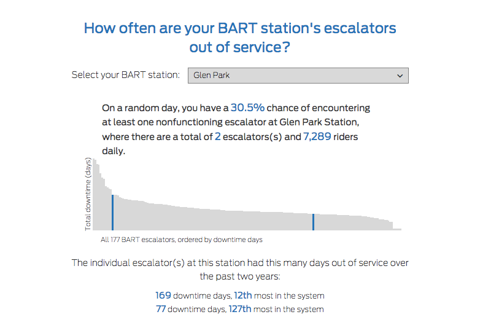

Kindergarten instructor Rebecca Sheehan-Stross sits with her students at Cesar Chavez Elementary School.
Photo: Michael Macor, The Chronicle
Teachers priced out
SF educators struggle to stay amid costly housing, stagnant salaries
Every morning, Rebecca Sheehan-Stross and her kindergarten students, sitting cross-legged on the floor, start the school day by counting up the time they’ve spent together at Cesar Chavez Elementary in the Mission District.
“How many days?” Sheehan-Stross quizzes the kids once the tally is done. The children call back: “141!”
The students’ number of days at Cesar Chavez will keep growing, but Sheehan-Stross isn’t sure how many more she will spend here. She loves her job but is considering leaving because she can’t afford a decent place to live.
If she goes, she’ll add to the growing ranks of teachers and classroom aides who have decided that working in San Francisco’s public schools isn’t worth the sacrifices they have to make — moonlighting as babysitters, cramming into apartments like college students, or renting other people’s dining and living rooms to get by.
Doing the math: Rent costs and teacher pay
Federal guidelines recommend spending no more than 30 percent of annual income on housing, but that’s difficult for San Fancisco teachers. Out of the 115 largest school districts in the state, San Francisco teachers had by far the worst pay-to-rent proportion, with Oakland and Berkeley a distant second and third.
Click or hover over the graph for more information.
Find your school district:
{{bubble.school}}
For school districts in the red, annual local rent exceeds 30% of income.
About the data: Rent estimates are from the rental listing company, Zumper. For cities that were not in Zumper’s database, estimates from the closest nearby city were used. All rental estimates are for one-bedroom units, and salary estimates are for the 2014-15 school year.
It’s well known that San Francisco has the highest median rents in the country, but what’s largely unknown is that its 3,292 teachers earn less, on average, than those in most other California public school districts. Many cities where it costs much less to live — Modesto, Newark and Long Beach among them — pay teachers more.
During the last school year, the average pay for teachers working in the San Francisco Unified School District was $65,240, placing it at No. 528 among the 821 school districts that reported data to the state Department of Education. (Unlike San Francisco, a small number of districts included the cost of benefits in their pay data, which could slightly skew the numbers. The salary figures also do not include the value of benefits, which vary from district to district.)
To afford a one-bedroom unit in the city at the median monthly rate of $3,500, the average teacher would have to spend 64 percent of his or her salary on housing — by far the highest proportion of any large school district in California.
Even an elementary school student could figure out that math doesn’t add up.
Teacher salary database
See how much teachers in your community earn. A mid-career salary is someone with the equivalent of 10 years of experience. The statistics for teachers also include some other employees, like nurses and school counselors.
| School district | County | Teacher count | Lowest salary | Average salary | Highest salary | Mid-career salary | |||||||||||||||||||||||||||||||||||||||||||||||||||||||||||||||||||||||||||||||||||||||||||||
|---|---|---|---|---|---|---|---|---|---|---|---|---|---|---|---|---|---|---|---|---|---|---|---|---|---|---|---|---|---|---|---|---|---|---|---|---|---|---|---|---|---|---|---|---|---|---|---|---|---|---|---|---|---|---|---|---|---|---|---|---|---|---|---|---|---|---|---|---|---|---|---|---|---|---|---|---|---|---|---|---|---|---|---|---|---|---|---|---|---|---|---|---|---|---|---|---|---|---|---|
| No results found. | |||||||||||||||||||||||||||||||||||||||||||||||||||||||||||||||||||||||||||||||||||||||||||||||||||
| To search our teacher pay database, type a name above. | |||||||||||||||||||||||||||||||||||||||||||||||||||||||||||||||||||||||||||||||||||||||||||||||||||
| {{row.school}} | {{row.county}} | {{row.full_time_teachers}} | ${{row.lowest_salary_offered}} | ${{row.average_salary}} | ${{row.highest_salary_offered}} | ${{row.step_10_salary}} | |||||||||||||||||||||||||||||||||||||||||||||||||||||||||||||||||||||||||||||||||||||||||||||
About the data: Teacher pay data was obtained from the California Department of Education. Not all school districts reported figures to the state in 2014-15.
Sheehan-Stross, 32, makes about $55,000 a year. She pays $1,200 a month to rent a dining room space in an Oakland apartment. There are no closets and little privacy. Between her student loans and other bills, she lives paycheck to paycheck. After long days teaching, she babysits when she can and is seeking a nanny job for the summer. She buys her clothes at Goodwill and considers her 2007 Honda Civic and a weekly burrito her two luxuries.
It’s not the lifestyle she pictured after earning her credential and master’s degree from UCLA, but teaching children living in poverty is her passion. She was a kindergarten and first-grade teacher in Watts and South Central Los Angeles before taking the Cesar Chavez job two years ago. She says she plans to stick it out one more year, then probably leave California altogether.
Read profile

Jessica Black reads to her second-grade students at Rosa Parks Elementary School. She and her wife want to raise a family, but that would require them to leave San Francisco.
Photo: Lea Suzuki, The Chronicle

Jessica Black gives instructions during a spelling test to her second-grade students at Rosa Parks Elementary School.
Photo: Lea Suzuki, The Chronicle
If Jessica Black and Dara Peters are able to have a baby, as they hope, the good news will come with a tinge of regret. They know expanding their family will mean leaving the teaching jobs they love — and leaving San Francisco altogether.
Black, 34, teaches second grade at Rosa Parks Elementary in Japantown. Peters, 44, teaches third grade at Junipero Serra Elementary in Bernal Heights. The women married recently and live in a junior one-bedroom apartment in the Lower Haight.
“It’s tiny,” Black said.

Jessica Black gives a thumbs up to one of her second-grade students at Rosa Parks Elementary School.
Photo: Lea Suzuki, The Chronicle
The bedroom is actually an enclosed porch that still has exposed pipes running through it. There are no closets, and their bed fits with 6 inches to spare.
There’s no place to put a baby, let alone an active toddler. Black and Peters have started looking for housing elsewhere, but are priced out of everything in San Francisco and Oakland.
They’ve thought about moving to Black’s hometown of San Luis Obispo, where rent is at least 60 percent less expensive. Or to Peters’ former stomping grounds in Humboldt County, where her sister, also a teacher, bought a three-bedroom house.
For now, the two women and their small dog, Jimmy Niblet, are staying put, but they’ve both seen an increasing number of co-workers leave. Young teachers are excited to work in San Francisco until they want to rent a bigger place or buy a house or have children, the women said, and then they’re gone.
Now it’s not just the hardest-to-staff, poorest schools that struggle with teacher turnover. Many of the more popular ones do, too.
“It’s impacting everyone,” Black said.
“We both love the city. We moved from our homes to live and work here,” Peters said. “It’s kind of strange to fight to be a teacher in a place that needs you.”
Heather Knight • hknight@sfchronicle.com • @hknightsf
Joaquin Palomino • jpalomino@sfchronicle.com • @JoaquinPalomino
“I feel like I live in a place where there’s so much to do, but I can’t afford to do any of it,” Sheehan-Stross said. “I don’t see any way to make it work.”
To make it work, San Francisco teachers are getting creative — and desperate. Some drive for Uber or Lyft, start GoFundMe pages or tend bar at night to pay the bills. A few teachers have lived in their cars, hostels or single-room-occupancy hotels. One aide got her principal’s permission to live at her school temporarily because she had nowhere else to go.
While the large majority of the city’s teachers live in San Francisco, district data show that some have mailing addresses as distant as Vacaville, Stockton, Gilroy and Watsonville. Many are leaving the district altogether, a trend that has increased sharply.
San Francisco Unified School District officials say a combination of structural factors and choices the city has made — including keeping class sizes small — makes it difficult to raise teacher pay to levels found in other California districts. And San Francisco isn’t the only district dealing with teacher shortages, a problem statewide since the last recession.
But in the city, the problems are becoming severe.
California’s Department of Education doesn’t track statewide teacher turnover, but of a diverse mix of 10 school districts that provided figures to The Chronicle, San Francisco Unified had the highest resignation rate. As of mid-April, almost 11 percent of the teaching force, or 368 teachers, announced they would leave the district come summertime, the largest sum in more than a decade and nearly double the amount from five years ago. The number does not include retirements.
In Santa Monica-Malibu, which also has an increasingly expensive rental market, 9 percent of teachers plan on resigning at the end of the school year. At Santa Clara Unified, about 7 percent of the teaching force is quitting. Just 3 percent of teachers resigned from Los Angeles Unified in the 2014-15 school year. National estimates place non-retirement-related resignations at between 4 and 8 percent.
The San Francisco teachers union attributes the large number of teacher departures largely to the city’s high cost of housing and low pay.
“Without a doubt this crisis affects the Bay Area more than any other part of the state, potentially more than any other part of the country,” said state Sen. Mark Leno, D-San Francisco, who is sponsoring legislation that would make it easier for districts to build housing for teachers.
The impact on individual schools can be huge. Cesar Chavez employs 26 teachers, and five will not return after school ends May 26, mostly because of housing concerns. The school secretary left midyear for Las Vegas after losing her apartment. At least five more teachers say they are considering leaving a year from now.
If paying the rent is challenging, buying is all but impossible. A study in 2014 by real-estate website Redfin found no homes for sale in San Francisco that were affordable for teachers, who make too much to qualify for the city’s low-income housing programs, but not enough to pay market rates.
“This is not sustainable. We can’t live like this forever. We want to be starting families and living like adults,” Sheehan-Stross said after school one day, her long limbs folded up in a tiny student chair. “They’re losing so many teachers, I don’t see how they will even have a district pretty soon.”
Salaries flat amid boom
Sheehan-Stross and other teachers say they didn’t go into the profession for the money but believe they should be able to afford a middle-class lifestyle. Currently, that’s out of reach for many of them.
In San Francisco, a new public school teacher with a credential and a bachelor’s degree makes between $50,200 and $55,400, depending on the number of academic units he or she has earned. The highest salary offered by the district is $87,700, after 26 years in the classroom.
About the data: Median household income figures are from the 2014 American Community Survey 1-year estimates.
Years of stagnant pay have kept teachers’ salaries flat amid San Francisco’s economic boom. After adjusting for inflation, pay for a mid-career teacher — one with the equivalent of 10 years’ experience — actually decreased between 2005 and 2015, in large part because of pay freezes during the recession. Meanwhile, San Francisco’s median household income, adjusted for inflation, jumped roughly $15,000 over that period.
In 2014, San Francisco Unified awarded teachers a 12 percent pay raise spread out over three years. But teachers in some neighboring districts can still earn far more.
During the last school year, the average San Francisco teacher could have made nearly $50,000 more by teaching high school students in Los Altos-Mountain View, which pays its teachers the most of any California school district. That same teacher could earn $30,000 more in Palo Alto, which has the state’s ninth-highest average salary.
Even teachers in much less expensive parts of the state have higher incomes. In Modesto, the average teacher makes $17,000 more a year than he or she would in San Francisco. Meanwhile, the annual median rent for a one-bedroom apartment is $33,000 less, according to estimates from rental website Zumper.
Elementary-school teachers in Merced make $14,500 more a year and spend $35,400 less on rent. Antioch’s average teacher pay is $7,600 higher than San Francisco’s, while the rent is $29,800 lower.
While San Francisco’s average teacher pay could be skewed because of the district’s young, inexperienced staff, its more senior teachers also earn less than many of their counterparts around the state. Nearly half of the districts in California paid mid-career teachers more than San Francisco Unified last year.
Read profile

Meghan Graber, an Everett Middle School social worker, was facing eviction, but there might be a happy ending.
Photo: Lea Suzuki, The Chronicle

Meghan Graber (center), social worker at Everett Middle School, commutes to work with her family.
Photo: Lea Suzuki, The Chronicle
For a San Francisco family that rents, life is like a house of cards — and an eviction notice can topple everything.
That’s what Meghan Graber and Patrick Hennessey learned after they received a 60-day owner move-in eviction notice in March on their two-bedroom flat in the Inner Richmond.
Graber, 36, works as a social worker at Everett Middle School in the Mission. Her 38-year-old husband is a teacher coach who works out of the central district office and helps teachers all over the city.
They have two children, one a kindergartner at New Traditions, a public school North of the Panhandle, and one in preschool near Everett. The eviction notice meant that not only was their housing in jeopardy, but that their jobs and children’s schools were likely to change, too.
They now pay $2,469 a month in rent and are already behind every month but looked for apartments in the city as high as $3,200 a month. They found nothing. They posted pleas on Facebook and Nextdoor and asked the teachers union and the Mayor’s Office of Housing for help.
Despite the long odds, their story just might have a happy ending.
Graber and Hennessey are in contract to buy a two-unit building near their apartment with another family of four. Both parents in that family also work in the school district. Theirs was one of four offers, and the seller chose them.
“It’s very rare,” Graber said with a sigh of relief. “I know it’s not typical.”
The mortgage will be “a lot more than their rent,” Graber said, though she didn’t want to specify how much more or the cost of the building until the deal closes. She and Hennessey will both probably take side jobs, such as tutoring, to pay the bills.
Although they’re cautiously optimistic they’ll soon be property owners in San Francisco, the couple were disappointed by the city’s inability to help them put together their down payment.
Graber and Hennessey hoped to each qualify for separate $20,000 grants from the Teacher Next Door program for home purchases. The money doesn’t have to be paid back if the teachers stay in the district for 10 years. But they learned they didn’t qualify because the money is available only for single-family homes or condos, not for tenancy-in-common purchases. The mayor’s office told them they could get the $40,000 if they bought the multiunit building themselves, but not with another family.
“To me, it doesn’t make any sense,” Graber said, noting teachers aren’t likely to be able to afford single-family homes, condos or multiunit buildings in this city.
Jeff Buckley, a senior adviser to Mayor Ed Lee, said the Mayor’s Office of Housing never offers TIC loans and couldn’t make an exception this time.
“Why would we do something special for Teacher Next Door that we’re not doing for other programs?” Buckley said, adding that underwriting a TIC loan is more complicated than other types of purchases.
“The loan evaluation process is very different,” he said. “We’re concerned that it’s a system that could potentially be gamed.”
Despite missing out on the $40,000, Graber and Hennessey are mostly thrilled.
“We love this city,” Graber said. “We’ve made our community here, and we really love our jobs.”
Heather Knight • hknight@sfchronicle.com • @hknightsf
Many things influence a teacher's pay. School districts have discretion in how they spend their money, and San Francisco Unified has committed to keeping class sizes small. The pupil-to-teacher ratio in the city is well below the state average, and classes are less packed than they are at most Bay Area schools, according to Department of Education data.
That means more teachers, but less money for individual salaries, said Myong Leigh, San Francisco Unified’s deputy superintendent for policy and operations.
While San Francisco Unified’s overall budget has increased over the past decade, the proportion directed toward teacher salaries dropped from 46 percent in 2005 to 41.5 percent in 2014, according to district data. The money saved was largely consumed by administrative and supervisorial pay and costs for health care and other benefits — including a $27,400 raise to Superintendent Richard Carranza last year.
SFUSD also is not flush with excess revenue. Districts such as Los Altos-Mountain View and Palo Alto, for example, receive more than enough local property taxes to support their public schools and still get basic funding from the state. That means they can direct extra tax revenue toward anything they choose, including teacher salaries.
Additionally, California doesn’t allocate money to districts based on an area’s cost of living. That puts San Francisco at a funding disadvantage.
“If we get $9,000 per student and so does a district in Bakersfield, the cost of everything, especially housing, is totally different,” Leigh said. “We’re probably the poster child for that problem.”
Losing the housing battle
Ask around Cesar Chavez, and there are plenty of housing horror stories.
Another kindergarten teacher is moving to Portland, Ore., this summer. She and her boyfriend, who rent separate tiny apartments, looked for a larger space in the hope of starting a family. At their limit of $2,300 a month, they found nothing.

Brian Raber, a special education teacher in the San Francisco Unified School District, talks about his new living space after school.
Photo: Liz Hafalia, The Chronicle
Brian Raber, a special education teacher at Cesar Chavez, relocated from Long Beach two years ago. He stayed in a hostel in Union Square for $70 a night before finding a dingy room North of the Panhandle for $1,120 a month. The tiny, closet-less space had once housed a staircase and previously was used for storage.
After a year and half there, Raber moved last month to an actual bedroom in an Ocean Beach apartment, where the monthly rent is $950. Still, he drives for Lyft after school to help afford life in the city.
“It feels kind of disgusting,” he said. “You work really, really hard and you take care of your stuff and you’re responsible — and you can’t even find a room?”
High costs, low pay
Teachers all over San Francisco are struggling. A December survey of 920 teachers and classroom staff conducted by the United Educators of San Francisco union found that 77 percent had a difficult time finding suitable housing. Fifty-nine percent said they were concerned the city’s high cost of housing would force them to leave the district.

Brian Raber, a special education teacher in the San Francisco Unified School District, shows the room where he had lived that was once a stairwell in an apartment.
Photo: Carlos Avila Gonzalez, The Chronicle
Many are seeking financial assistance from the union, which doles out grants ranging from $200 to $1,500 from its hardship fund. Normally, there are 12 applications a year, including some for unexpected medical bills or hospitalizations. “Last year, we had three times the number of applications, ranging from people living in their cars to a paraprofessional wanting to buy a bed for her children,” said union President Lita Blanc. “I sat at my kitchen table and cried.”
Low pay has helped make teaching a less popular profession across California. By some estimates, the state would need to hire 60,000 educators just to bring staffing back to pre-recession levels. San Francisco Unified still has about 300 fewer certified teachers, including substitutes, than it did in 2009.
The Learning Policy Institute, a nonpartisan research organization focused on elementary and secondary education, recently released a report showing enrollment in teacher training programs statewide dropped 70 percent in the past decade. Many schools remain especially short-staffed when it comes to special education teachers, science and math teachers, aides and substitutes.
Amy Tigerman waits every afternoon in the parking lot of her apartment complex for her son, Max, to come home.
Every day, a white Whistlestop shuttle pulls into the South San Francisco lot, and Tigerman climbs aboard to greet her son and help him get down the shuttle stairs and back to their apartment.
“Mama!” he calls amid grunting noises. “Mama!”
“Lead the way, dude!” she tells him. “It’s all you!”
Max Brown is 26, but a 2½-hour seizure he suffered as a toddler left him with just a few words and a halting, shaky walk.
Tigerman, 55, spends her days teaching second grade at Lawton Alternative School in the Outer Sunset. Brown spends his days at the Janet Pomeroy Center, a recreation and rehabilitation center for disabled people near the San Francisco Zoo. They reunite joyfully at 4:20 p.m. in the parking lot.
Second-grade teacher Amy Tigerman and son Max Brown rent an apartment in South San Francisco.
Photo: Scott Strazzante, The Chronicle
Tigerman, who has been with San Francisco Unified for 27 years, hopes she can hang onto their two-bedroom apartment in South San Francisco, at least until she retires in five years — if not longer. All of Max’s services, paid by the state, are nearby. Her ex-husband lives in an apartment in the same complex so they can care for Max together.
But like most less-expensive options outside San Francisco, South San Francisco lacks rent control. When Tigerman moved there in 1998, she paid $1,075 a month. Now, her rent is $2,200 a month. And her landlord has warned her to expect yearly rent hikes of $150 to $250 per month, meaning that when she’s up for retirement, her rent could be $3,200 a month or higher.
But finding another two-bedroom apartment that costs less is impossible. And so she’s stuck. And worried.
“I didn’t necessarily plan on being wealthy, but I expected to be able to survive,” Tigerman said. “To see it each year becoming less and less tangible, it makes you feel so very unimportant for such an important job.”

Lawton Alternative elementary school teacher Amy Tigerman greets her second-grade class. The rent keeps rising on the South San Francisco apartment she shares with her disabled son, but they can’t afford to move.
Photo: Liz Hafalia, The Chronicle
Heather Knight • hknight@sfchronicle.com • @hknightsf
To fill the gaps, some districts are increasingly relying on noncredentialed teachers. The number of educators in California with temporary permits, waivers and intern credentials grew by 40 percent between 2010 and 2014, according to the state Commission on Teacher Credentialing.
The jump was particularly large in San Francisco, which experienced a 76 percent increase in noncredentialed teachers over the period, going from 116 to 204.
“This is a crisis, and it’s going to get worse and worse,” said Ken Tray, political director for the teachers union. “What kind of city and school district do we want five years from now? It’s a bleak picture at this point.”
Recruitment challenges
At Cesar Chavez, a school whose 439 students are primarily Latino and low-income, the walls are covered in murals of children, butterflies and balloons. A garden runs alongside the front wall. Red graffiti on the sidewalk reads: “Bang on the system.”
That’s what the school has tried to do, gradually improving the education it offers students, many the children of Mexican and Central American immigrants who have little or no schooling. Some families are packed into SRO hotel rooms, and a few live in cars or homeless shelters. Nine out of 10 students qualify for free or reduced-price lunch, and 82 percent are learning the English language.

Kindergarten teacher Rebecca Sheehan-Stross prepares a lesson at Cesar Chavez Elementary School.
Photo: Liz Hafalia, The Chronicle
Catalina Rico has been Cesar Chavez’s principal since 2010. She’s proud of the strides the school has made, especially students’ improvements in reading, writing and English-language development assessments.
But the cost of housing is working against the school’s ambitions. With five teacher openings to fill next year, Rico spends a lot of time at recruitment fairs. Her teachers say the school’s improvement had contributed to a more stable staff — until the city’s housing crisis struck and turnover worsened.
Sheehan-Stross pledges to stay one more year because she doesn’t want two kindergarten classes to have new teachers in the fall. A school full of kids whose lives are often unstable needs a consistent teaching staff, she said.
“It’s important that they know their teachers will still be here,” she said.
Aid slow to arrive
The school district and City Hall have plans to help teachers better afford housing, but those may come too late for Sheehan-Stross and others in her predicament.
Along with the teachers union, the district and mayor’s office have formed a working group to discuss remedies. In November, voters approved a housing bond, backed by Mayor Ed Lee, that includes money for teacher housing. But six months later, the group has spent no money and has made no firm decisions.
The school district discussed building teacher housing as far back as 2004, but no such housing yet exists. There is a plan to use bond money to construct a facility, but no site has been selected, and there are no details on how many teachers it would accommodate or how they would be selected. Jeff Buckley, senior adviser to Lee, said 2020 is the projected move-in date.
More bond money will be spent on a program that offers down-payment loan assistance to first-time home buyers, including teachers and aides, and the city hopes to raise the current maximum loan amount from $200,000 to $375,000. If the money available can’t cover all applicants’ loans, teachers will have some priority, Buckley said.
The city also will spend $250,000 on a one-stop shop for eviction-prevention services for teachers that is to start this year. The district also plans to offer rental subsidies for teachers in the next academic year, but there are no details yet.
Leigh, the deputy superintendent, said these efforts should help 500 teachers and aides. The union supports the plans, but says they’re not being launched quickly enough.
“What would have been fast enough is starting five years ago,” said Susan Solomon, executive vice president of United Educators.
In the meantime, there are other, smaller avenues of help. The district pays teachers one-time bonuses of $2,500 for staying on the job four years and an additional $3,000 after eight years. The city-run Teacher Next Door program gives grants of $20,000 to teachers to buy a home; teachers don’t have to repay the money if they stay in the district for 10 years, but $20,000 doesn’t go far in the Bay Area real estate market. In April, the Board of Supervisors banned no-fault evictions of teachers and other school staff during the academic year.
Leigh said the district is “getting more and more concerned” about housing affordability.
“We want to make as much of a meaningful difference to as many of our employees as we can,” he said. “But we don’t have the resources to solve it.”

Kindergarten teacher Rebecca Sheehan-Stross guides her students to recess at Cesar Chavez Elementary school.
Photo: Michael Macor, The Chronicle
Bleak outlook for profession
In Sheehan-Stross’ kindergarten classroom at Cesar Chavez, her worries about life outside are set aside for the children’s joyful routine. She fills the day with memorable rhymes and repetition to ensure they learn English.
Each morning, she writes a message on the white board for them to read aloud.
“The morning message is so cool, it makes us smart at our school!” they chant. “It helps us learn our sounds and letters, and when we read we all get better!”
Later, they break into four groups, tackling different math activities at separate tables. Six-year-old Jelena Serrano, dressed in a purple T-shirt decorated with a pink-shelled crab, has a lengthy explanation for why she loves school and her teacher.
“Because when we raise our hands, she calls on us. And if we’re good, we get prizes,” she says. “And we have math and we love doing library and playing. Math is my favorite. I like to count at home. I count numbers on yellow paper.”
At the start of the school year, Sheehan-Stross said, many of her students didn’t know the alphabet or understand what numbers were. “When they leave, they’re reading, and doing addition and subtraction,” she said. “It’s an amazing year to see all that growth.”
Each year, she has her students write about what they want to be when they grow up. Many say they want to be a teacher like her. It’s an answer that makes her both happy and sad.
“I wouldn’t want them to be teachers,” Sheehan-Stross said. Especially in a place like San Francisco, she said, where the work to get a credential and the unpaid hours and dedication don’t add up to a chance at a middle-class lifestyle.
“To know you wouldn’t want your students to have that job because they wouldn’t have their basic needs met?” she said. “It’s really heart-breaking.”
Reporters:
Heather Knight • hknight@sfchronicle.com • @hknightsf
Joaquin Palomino • jpalomino@sfchronicle.com • @JoaquinPalomino
Interactive producer:
Emma O'Neill • eoneill@sfchronicle.com • @emmaruthoneill

H-1B visas: who gets them, where they go

A breakdown of BART's broken down escalators